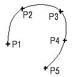

样条数据
创建样条时将储存以下数据：
-
曲线阶次
-
曲线中极点(顶点)的排列
-
定义曲线段的参数值
-
定义点(如果已创建)
-
拟合权重值(如果已创建)
-
节点位置
样条是非均匀的有理 B-样条，或者 NURBS，NURBS 也可以被认为是自由成形曲线。
样条对话框中包含四种创建样条的方法：根据极点、通过点、拟合以及垂直于平面。
艺术样条对话框中包含两种创建样条的方法：根据极点和通过点。
当使用根据极点选项定义样条时，它将向您选择的点(简称为极点)移动，但是不通过它们，除非是端点。

对于使用根据极点和通过点选项创建的样条，您可以创建单段或多段样条，每一个样条段最多25个点(阶次等于24)，可以创建多段样条以便您可以使用数量不限的点。
默认是多段
|
注释 |
如果想要创建单段样条，选中单段复选框，这个选项在艺术样条—通过点中不可用。 |
定义点和结点
有两种类型的点与样条关联：
定义点 — 用来定义样条的点
结点 — 样条段的端点，单段样条只有两个结点(位于样条曲线的两端)
|
注释 |
对于三阶样条(三次样条曲线)，定义点和结点是一样的。 |
封闭的样条和曲线阶次
封闭的样条连接您定义的第一个和最后一个点，要创建封闭样条，选中封闭曲线复选框。
|
开放的样条 |
封闭的样条 |
|
 |
|

曲线阶次让您指定样条阶次(仅当您创建多段样条时可用，对于单段样条，这个设置不可用)
对点指定斜率
您可以对样条指定斜率或曲率，也可以控制样条在任意点的斜率。